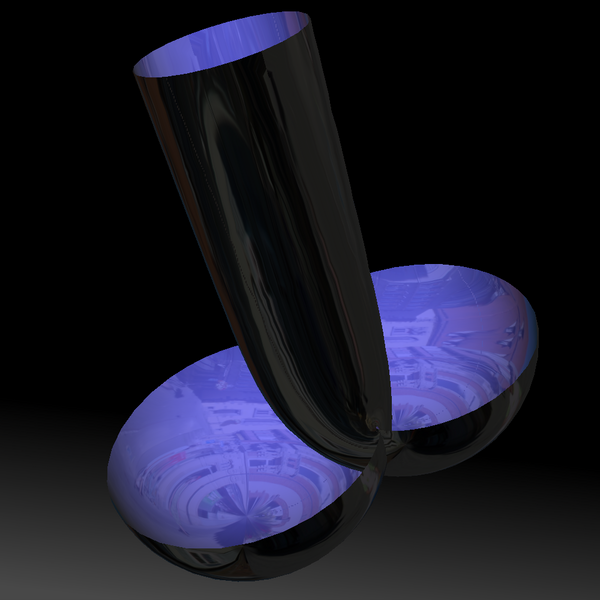
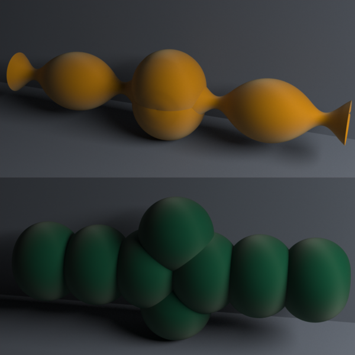
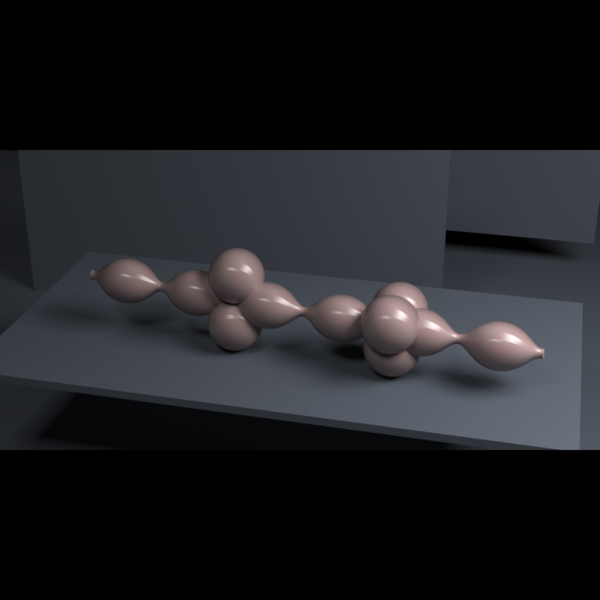
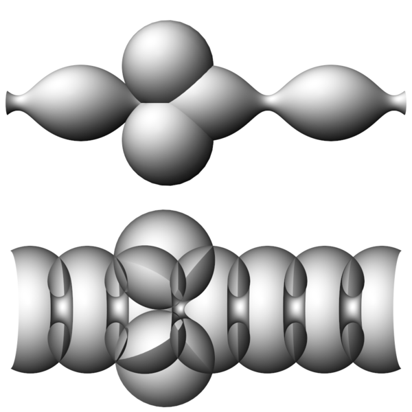
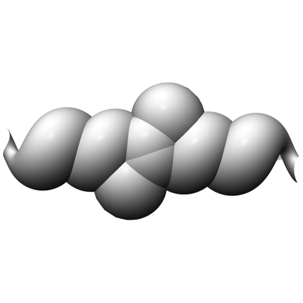

Constant mean curvature cylinders in euclidean 3-space
Delaunay bubbletons are constructed by dressing a Delaunay surface with a product of simple factor dressings [3,1,2].

A two-lobed bubble on a straight cylinder.

Two-lobed bubbles on a Delaunay unduloid and nodoid.

Double bubbleton: two-lobed and three-lobed bubbles on a Delaunay unduloid.

Two-lobed bubbles on a Delaunay unduloid and nodoid.

Two-lobed bubbleton on a Delaunay twizzler.A two-lobed bubble colides with a 3-lobed bubble.
References
M. Melko and I. Sterling, Application of soliton theory to the construction of pseudospherical surfaces in R3, Ann. Global Anal. Geom.11(1993), no. 1, 65—107 [1201412].
M. Melko and I. Sterling, Integrable systems, harmonic maps and the classical theory of surfaces, Harmonic maps and integrable systems, Aspects Math., E23, Friedr. Vieweg, Braunschweig(1994), 129—144 [1264184].
I. Sterling and H. Wente, Existence and classification of constant mean curvature multibubbletons of finite and infinite type, Indiana Univ. Math. J.42(1993), no. 4, 1239—1266 [1266092].